地址规划调度服务器
DR1 主服务器：192.168.10.173
DR2 备份服务器：192.168.10.174
调度服务器
wed1：192.168.10.171
web2：192.168.10.172
虚拟ip
vip：192.168.10.10
客户机
client：192.168.10.11
1：配置调度服务器DR1,DR2
[root@localhost ~]# yum install ipvsadm keepalived -y
修改DR调度服务器ip地址
DR1
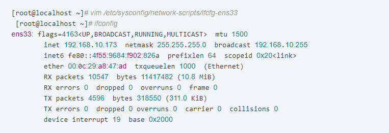
改调度服务器的主配置文件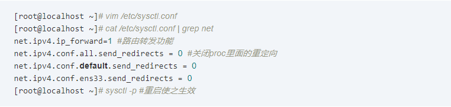
创建虚拟网卡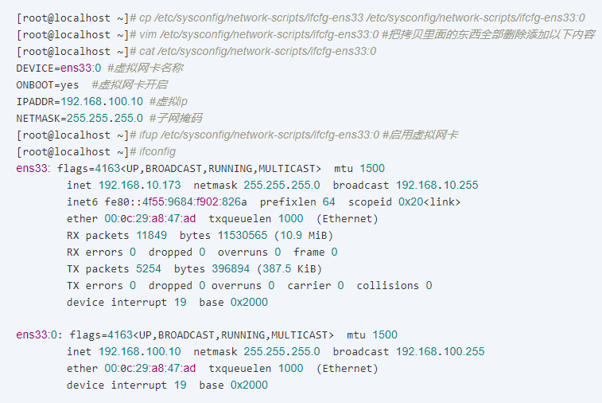
在/etc/init.d/底下添加服务启动脚本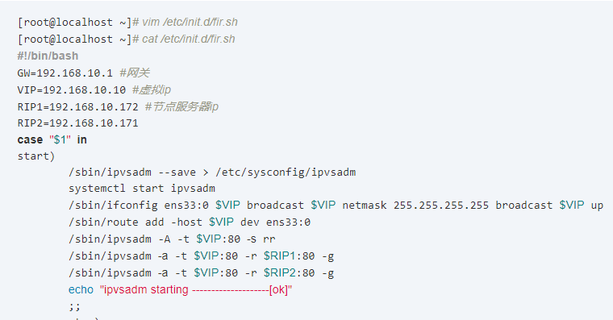
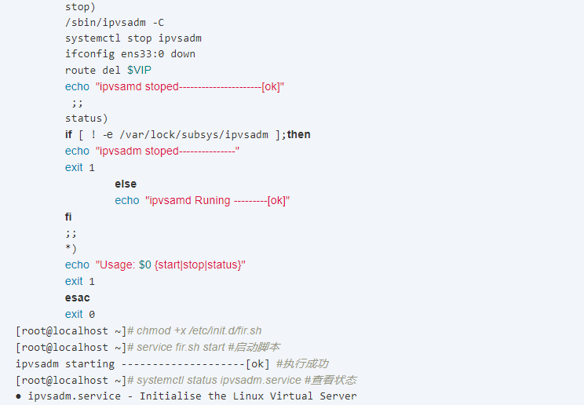
配置keepalived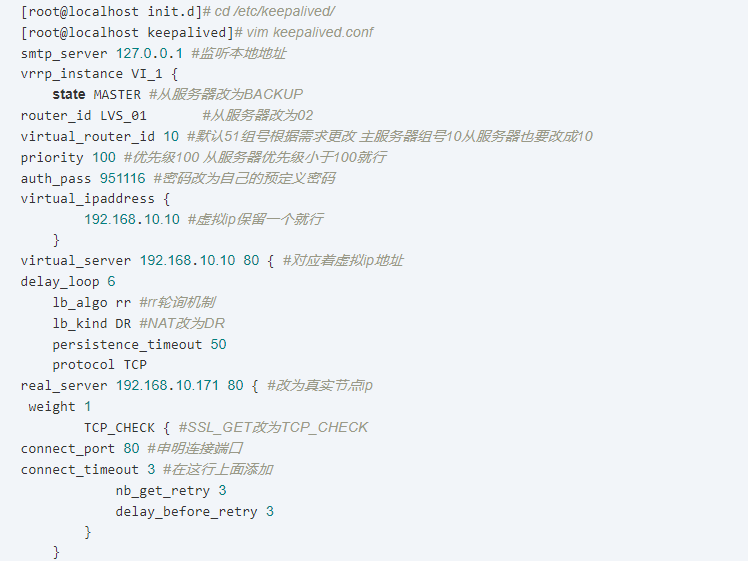
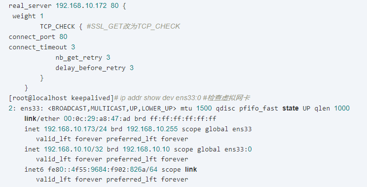
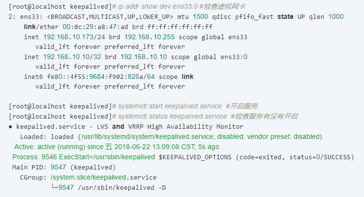
[root@localhost keepalived]# systemctl stop firewalld.service #关闭防火墙
[root@localhost keepalived]# systemctl status firewalld.service
[root@localhost keepalived]# setenforce 0 #关闭安全模块
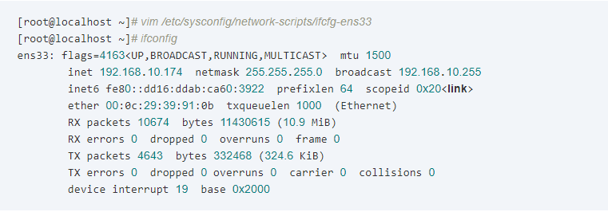
修改内核文件在/etc/stsctl.conf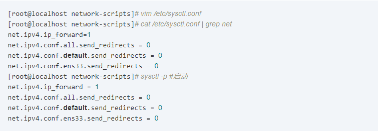
配置虚拟ip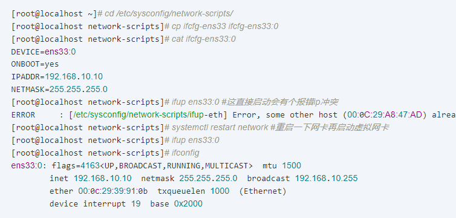
做ipvsadm启动脚本 [root@localhost init.d]# vim ipvs.sh [root@localhost init.d]# cat ipvs.sh #!/bin/bash GW=192.168.10.1 VIP=192.168.10.10 RIP1=192.168.10.171 RIP2=192.168.10.172 case "$1" in start) /sbin/ipvsadm --save > /etc/sysconfig/ipvsadm systemctl start ipvsadm /sbin/ifconfig ens33:0 $VIP broadcast $VIP netmask 255.255.255.255 broadcast $VIP up /sbin/route add -host $VIP dev ens33:0 /sbin/ipvsadm -A -t $VIP:80 -s rr /sbin/ipvsadm -a -t $VIP:80 -r $RIP1:80 -g /sbin/ipvsadm -a -t $VIP:80 -r $RIP2:80 -g echo "ipvsadm starting --------------------[ok]" ;; stop) /sbin/ipvsadm -C systemctl stop ipvsadm ifconfig ens33:0 down route del $VIP echo "ipvsamd stoped----------------------[ok]" ;; status) if [ ! -e /var/lock/subsys/ipvsadm ];then echo "ipvsadm stoped---------------" exit 1 else echo "ipvsamd Runing ---------[ok]" fi ;; *) echo "Usage: $0 {start|stop|status}" exit 1 esac exit 0 [root@localhost init.d]# chmod +x ipvs.sh [root@localhost init.d]# service ipvs.sh start ipvsadm starting --------------------[ok] keepalived部署 [root@localhost init.d]# cd /etc/keepalived/ [root@localhost keepalived]# vim keepalived.conf global_defs { ... smtp_server 127.0.0.1 #指向本地 router_id LVS_01 #指定名称,备份服务器不同名称 ... } vrrp_instance VI_1 { state BACKUP priority 99 #优先级备份小于主服务器 主服务器优先级100 从就是100以下 virtual_router_id 10 #组号相同 auth_pass abc123 #验证密码 ... ... virtual_ipaddress { 192.168.10.10 } ... ... virtual_server 192.168.10.10 80 { ... real_server 192.168.10.10 { weight 1 SSL_GET { #改为TCP_CHECK 删除下列八行 connect_port 80 #加上本行 connect_timeout 3 nb_get_retry 3 delay_before_retry 3 } } #复制上列9行 添加另一个真实节点ip real_server 192.168.10.172 { weight 1 TCO_CHECK { connect_port 80 connect_timeout 3 nb_get_retry 3 delay_before_retry 3 } } [root@localhost keepalived]# systemctl start keepalived #启动keepalived [root@localhost keepalived]# ip addr show dev ens33:0 #查看虚拟ip 2: ens33: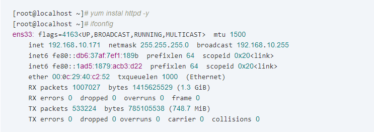
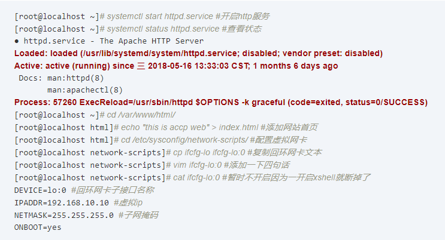
控制服务启动脚本 [root@localhost network-scripts]# cd /etc/init.d/ [root@localhost init.d]# vim wed.sh [root@localhost init.d]# chmod +x wed.sh [root@localhost init.d]# cat wed.sh #!/bin/bash VIP=192.168.10.10 case "$1" in start) ifconfig lo:0 $VIP netmask 255.255.255.255 broadcast $VIP /sbin/route add -host $VIP dev lo:0 #启用虚拟ip vip 添加网段 echo "1" >/proc/sys/net/ipv4/conf/lo/arp_ignore #接受调度服务器给与的回馈 echo "2" >/proc/sys/net/ipv4/conf/lo/arp_announce echo "1" >/proc/sys/net/ipv4/conf/all/arp_ignore echo "2" >/proc/sys/net/ipv4/conf/all/arp_announce sysctl -p >/dev/null 2>&1 #加载内核优化 echo "RealServer Start OK " #提示启动成功语句 ;; stop) ifconfig lo:0 down route del $VIP /dev/null 2>&1 echo "0" >/proc/sys/net/ipv4/conf/lo/arp_ignore echo "0" >/proc/sys/net/ipv4/conf/lo/arp_announce echo "0" >/proc/sys/net/ipv4/conf/all/arp_ignore echo "0" >/proc/sys/net/ipv4/conf/all/arp_announce echo "RealServer Stopd" ;; *) echo "Usage: $0 {start|stop}" exit 1 esac exit 0 [root@localhost init.d]# service wed.sh start RealServer Start OK [root@localhost init.d]# ifup lo:0 #开启回环网卡 [root@localhost init.d]# systemctl stop firewalld.service #关闭防火墙 [root@localhost init.d]# setenforce 0 [root@localhost ~]# firefox "http://127.0.0.1/" & #自测 自测（web1，web2）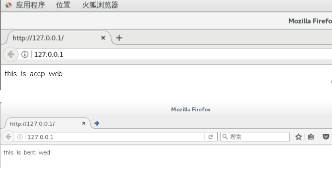
wed2 （与节点服务器wed1同样配置）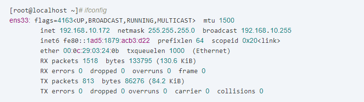
用192.168.10.10IP地址测试一下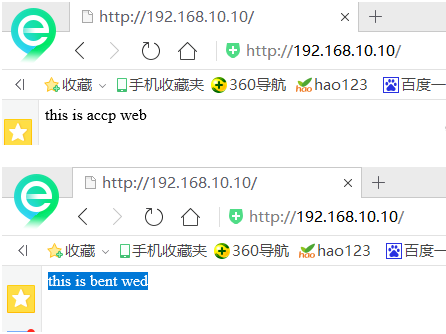
down掉主调度服务器看能不能正常访问 测试 （down掉了7-3主调度服务器）依然能访问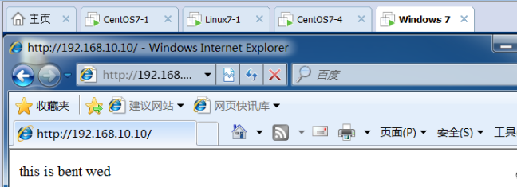